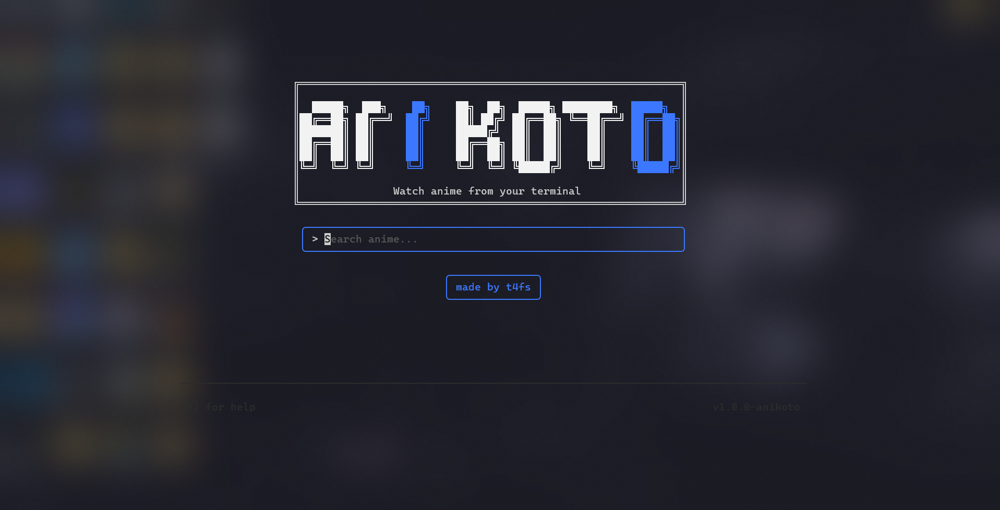
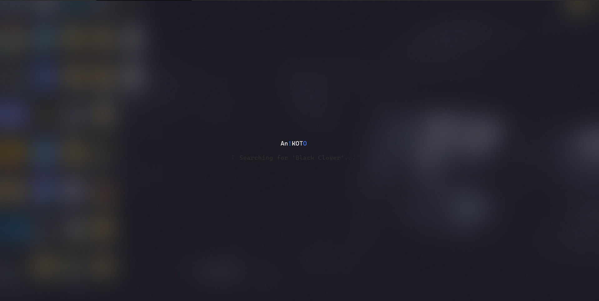
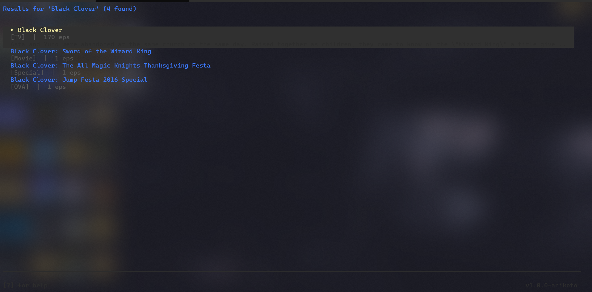
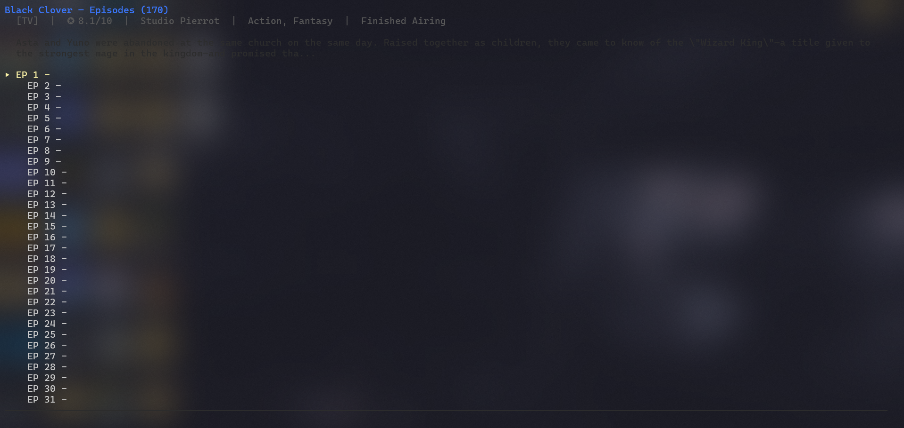
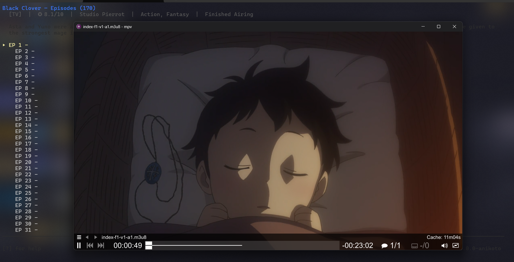

watch anime in your terminal
your terminal, but with anime





everything you need, nothing you don't
search anidb.app and browse results from your terminal — no browser needed.
toggle between subbed and dubbed episodes with a single key.
multiple sources (1080p / 720p / 360p) with automatic selection.
click the made by t4fs button to open the author's GitHub.
plays in mpv, vlc, iina, or haruna — override with ANITUI_PLAYER.
built in Go with bubbletea. Windows, Linux, and macOS.
have a question not answered here? open an issue on GitHub
Yes — An!KOTO is completely free and open source (GPL-3.0). No paywalls, no ads.
anidb.app. Search, episodes, and streams all come straight from anidb.app — no account needed.
Windows, Linux, and macOS (amd64 & arm64).
mpv, vlc, iina (macOS), and haruna. An!KOTO auto-detects your player, or set the ANITUI_PLAYER environment variable.
No — everything works with vim keys or arrow keys. The mouse is just a bonus (like the clickable credit button).
build from source — it takes seconds
64-bit, build with Go
cd anikoto
go build -trimpath -o "$HOME\.anitui\anitui.exe" ./cmd/anitui
Source on GitHub